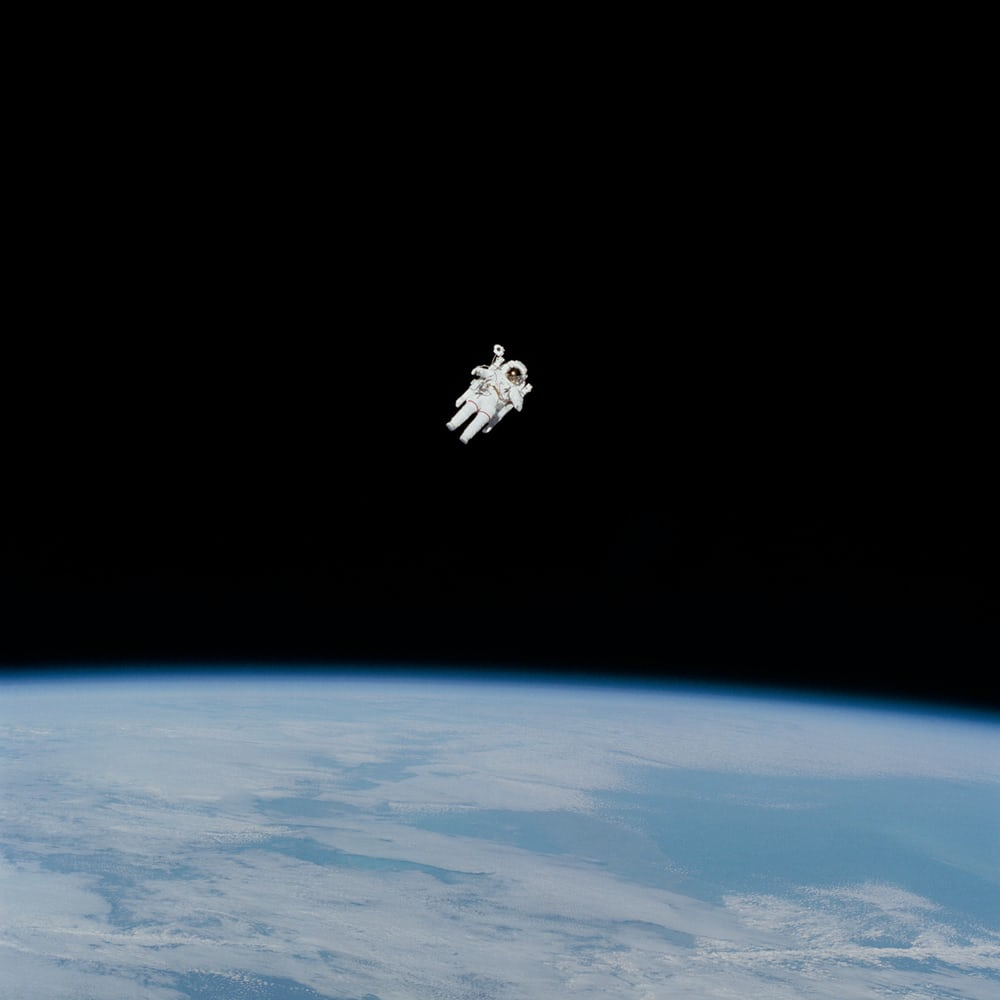

우주의 운명
은하의 후퇴를 관찰하던 20세기 천문학자들은 우주가 팽창하고 있다는 놀라운 사실을 발견하였다. 이 팽창은 영원히 계속될 것인가? 빛의 속도는 유한하다. 그러므로 저 먼 우주를 들여다보는 것은 먼 과거를 보는 것과 마찬가지다. 허블 우주망원경이 찍은 이 세 장의 사진은 관측가능한 가장 멀리 있는 초신성들(50억~70억 광년 너머에 있는 별의 폭발)을 보여준다. 이것은 태양이 태어나기도 전의 일이다. 최근 보고된 바에 따르면, 이것을 비롯한 다른 먼 초신성들의 밝기와 팽창 속도는 우주의 팽창률이 감속된 것이 아니라 시간의 경과에 따라 더 빨라지는 것으로 보인다고 한다. 우주는 지속적인 팽창으로 운명지어진 것이다.

20세기 초반에 관측된 우주 팽창은 빅뱅 이론을 뒷받침하는 강력한 증거였다. 우주 태초의 폭발에 의한 관성이 우주 팽창을 주도하고 있는 것이다. 그런데 질량이 있는 물질들은 중력으로 서로 당긴다. 따라서 시간이 감에 따라 우주의 팽창속도는 느려질 것이라고 예상되었었다. 우주 전체에 분포하는 물질의 양에 따라 팽창이 마침내 멈추고 되려 수축하던가 아니면 느리게나마 계속 팽창할 것이라고 여겨졌다. 어쨌든 팽창 속도가 느려질 것이라는 예상이 지배적이었던 것이다.